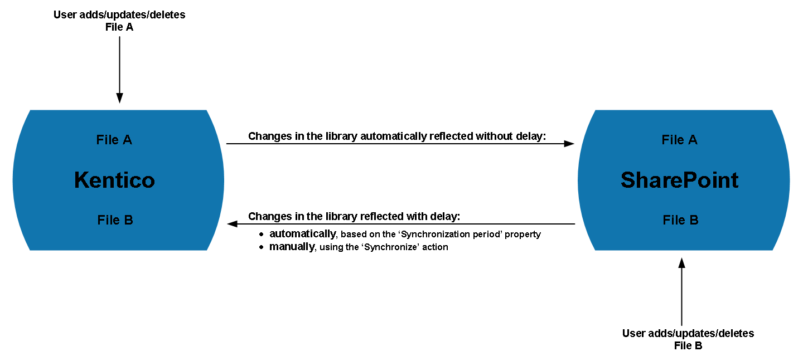

Managing SharePoint libraries
Using the Kentico administration interface, you can manage selected types of SharePoint libraries, and work with files available in these libraries.
The system allows you to work with files from:
SharePoint picture libraries,
SharePoint document libraries.
Managing SharePoint libraries
To manage SharePoint libraries in Kentico, use the SharePoint application. The application allows you to select libraries available in SharePoint, and open them in the Kentico administration interface. You can then work with files contained in these libraries as if you were directly connected to SharePoint.

Available SharePoint libraries
To manage SharePoint libraries, use the following basic actions:
Edit (
 ) - opens the SharePoint library editing interface, where you can view and modify library details and manage the contained files.
) - opens the SharePoint library editing interface, where you can view and modify library details and manage the contained files.You can modify general properties of the library, e.g. its display name.
You can modify the period when the system automatically reflects in Kentico any changes made to the content of the library in SharePoint (the Synchronization period property). To ensure correct functionality, other properties related to synchronization cannot be modified.
Delete (
 )
)
Deleting connections to SharePoint
If you delete from the SharePoint connections application a connection used in the definition of a SharePoint library in Kentico (i.e. a connection used in the library's Connection property), you can no longer synchronize the library.
The downloaded content is further available but read-only, which means you can access the listed files (i.e. download the files to your computer or mobile device, and view images) but cannot update them or add new ones.
Deleting SharePoint libraries
If you delete a SharePoint library from the SharePoint application in Kentico, the library is not affected in SharePoint. To delete libraries from SharePoint, you need to delete these libraries directly in SharePoint.
If you delete a library from SharePoint, the library remains available in the SharePoint application in Kentico but cannot be synchronized. This means you can further access the already downloaded files but cannot update the files or add new ones.
If you delete a library from SharePoint by moving it to the SharePoint recycle bin, the library cannot be synchronized with Kentico until restored in SharePoint.
Adding SharePoint libraries
To add a new SharePoint library:
Open the SharePoint application.
Click Add SharePoint library.
Enter the SharePoint library properties.
Click Save.
The system adds the library to the list of available SharePoint libraries, and starts downloading the files based on a newly added scheduled task. You can carry on working with the system until the download has finished.
When the files are downloaded to Kentico, they become available for viewing and downloading to your computer or mobile device. See Working with files from SharePoint libraries.
Synchronizing SharePoint libraries
How synchronization of SharePoint libraries works
All changes that you make in Kentico to the content of SharePoint libraries take effect in Kentico and SharePoint at the same time.
All changes made in SharePoint to the content of SharePoint libraries available in Kentico are reflected in Kentico with delay.

Diagram - How synchronization of SharePoint libraries works
Changing the period when the system automatically reflects changes made in SharePoint
By default, the system checks if changes have been made in SharePoint to the content of available libraries every 12 hours.
If any such changes are identified, the system automatically removes from the libraries all deleted files and starts downloading ones that have been added and modified.
To change the period when the system automatically checks the current state of a selected library in SharePoint and reflects the changes in Kentico:
Open the SharePoint application.
Edit (
) a library.Switch to the General tab.
Change the value of the library's Synchronization period property as required.
Click Save.
The system now automatically checks the current state of the library in SharePoint and reflects the changes in Kentico at the new interval.
Manually reflecting changes made in SharePoint
To get the system to check the current state of a selected library in SharePoint and reflect the changes in Kentico instantly:
Open the SharePoint application.
Edit (
) a library.The system opens the library on the Files tab.
Click Synchronize.
The system removes from the library all files deleted in SharePoint since the last synchronization (either automatic or manual) and starts downloading ones that have been added to and modified in SharePoint since the last synchronization (either automatic or manual). You can carry on working with the system until the download has finished.